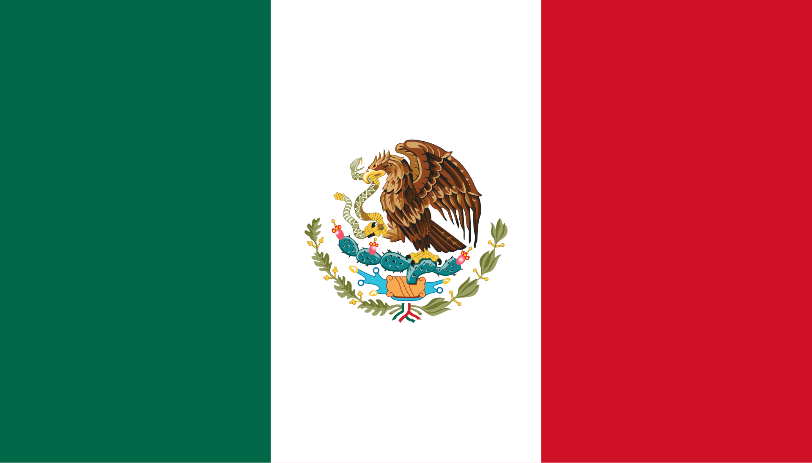

Мексиканские Соединённые Штаты — федеративная республика в Северной Америке, занимающая уникальное положение между США и странами Центральной Америки. Это государство с богатейшим историко-культурным наследием, где наследие древних цивилизаций майя и ацтеков переплетается с испанским колониальным влиянием. Мексика обладает разнообразными природными ресурсами и является одной из крупнейших экономик мира с развитой промышленностью (автомобилестроение, нефтехимия) и мощным аграрным сектором. Страна активно участвует в международной торговле, являясь членом НАФТА (ныне USMCA), ОЭСР и G20.
Несмотря на экономические успехи, Мексика сталкивается с серьезными внутренними вызовами: значительное социальное неравенство, проблемы с безопасностью из-за деятельности наркокартелей, и коррупция остаются острыми вопросами.